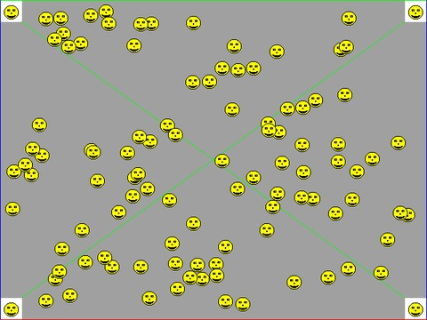
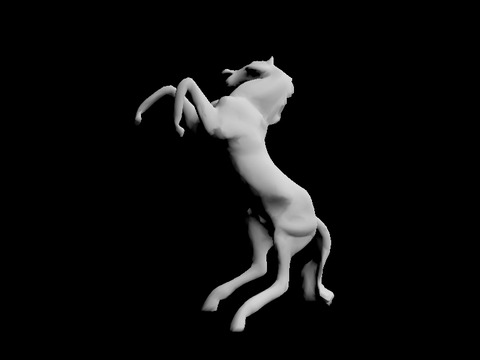
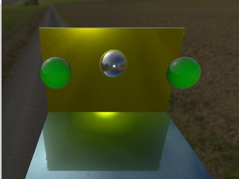

// one set of vertex buffers for all frames VULKAN_Buffer vertexBuffers[256]; // every frame (4 swapchain images, // 4 command buffers, 4 fences) cur = (cur + 1) % swapchainImageCount; vkWaitForFences(..., &fences[cur], ...); // waits only for the command buffer // about to be reused, 4 frames back vkAcquireNextImageKHR(...); SDL_memcpy(vertexBuffers[0].mapped, vertices, size); // BUG // record draws reading vertexBuffers[0] vkQueueSubmit(..., fences[cur]); vkQueuePresentKHR(...);
// one set of vertex buffers per frame in flight SDL_memcpy(vertexBuffers[cur][0].mapped, vertices, size);


